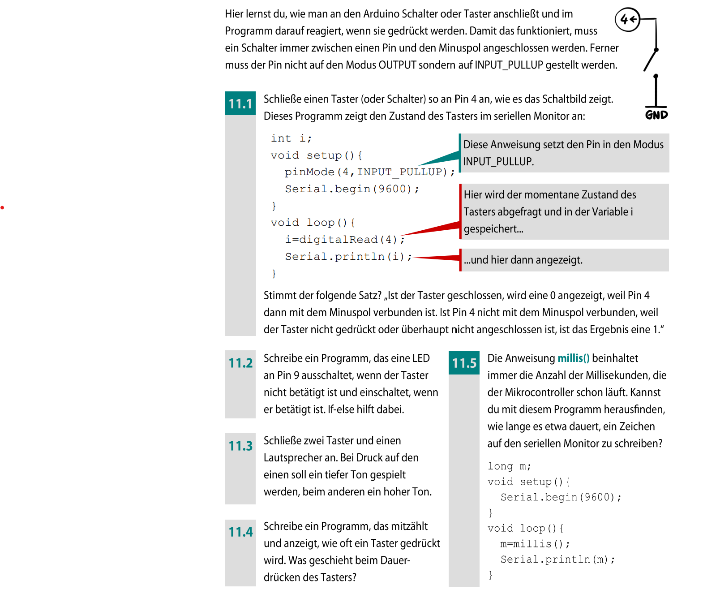
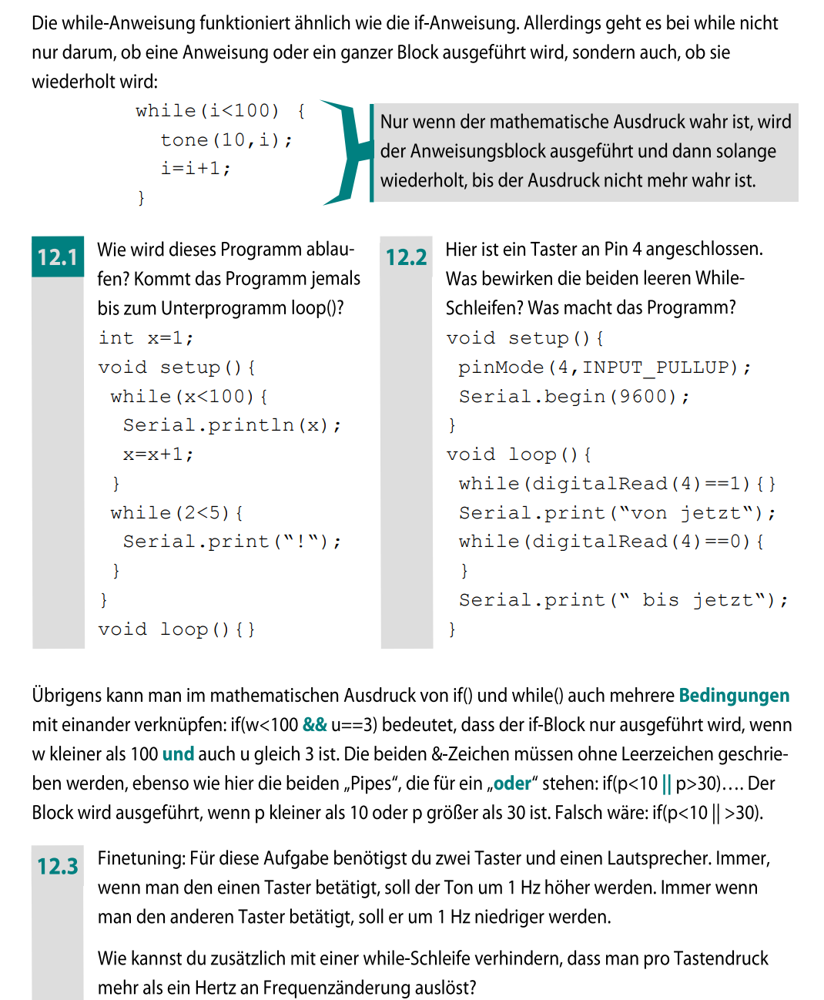
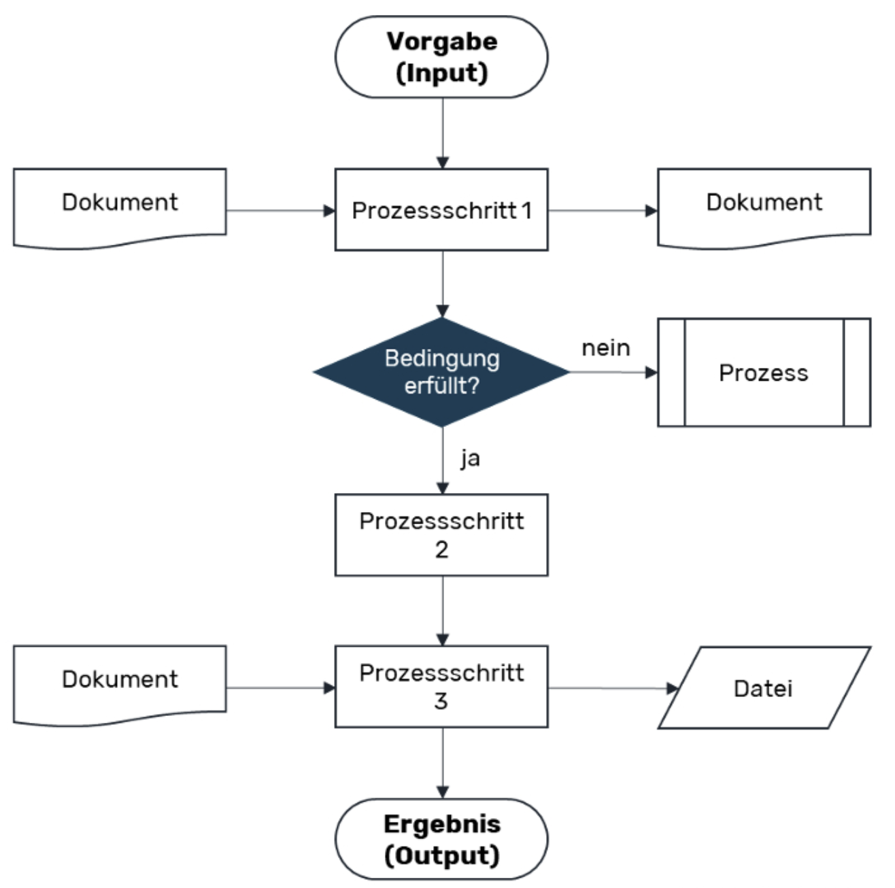
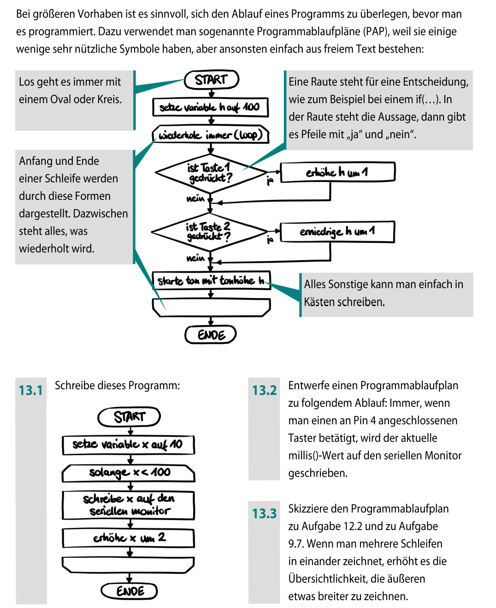
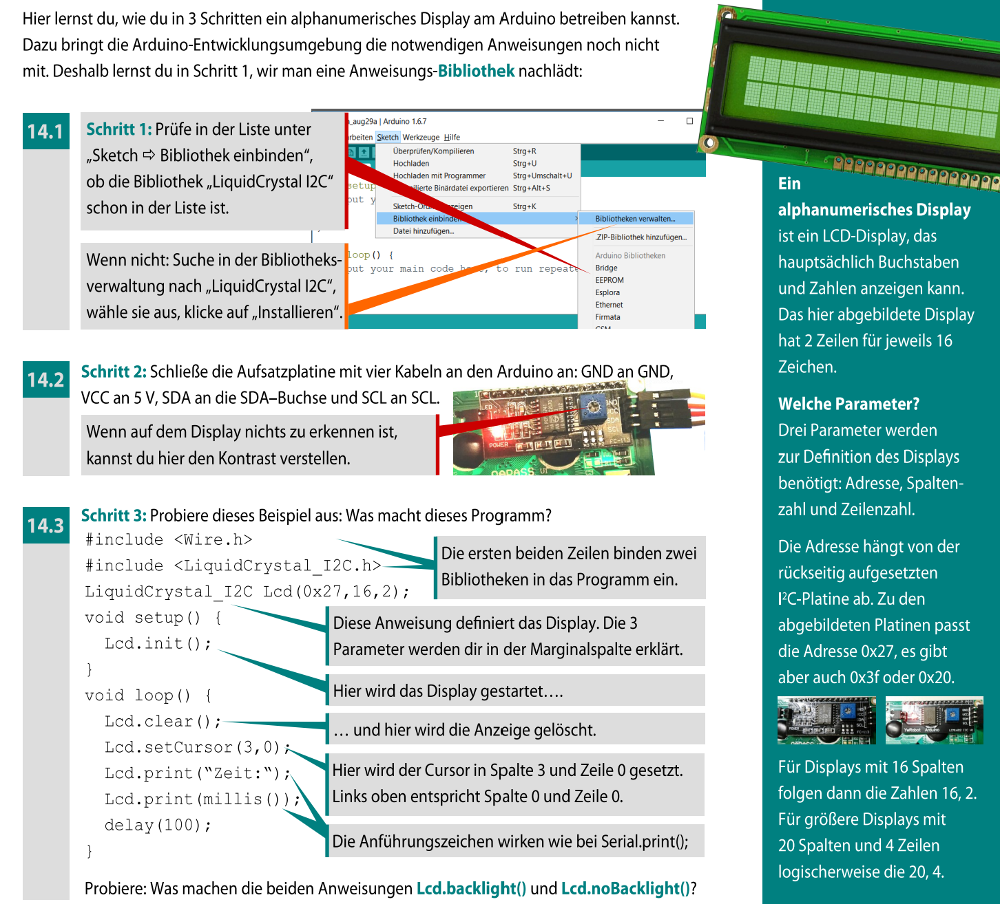

11. Eingaben mit Tastern - Der Arduino reagiert
Damit kann der Arduino auf Eingaben reagieren - ähnlich wie bei einer Tastatur.
- LOW (0) - kein Signal / nicht gedrückt
- HIGH (1) - Signal / gedrückt
digitalRead(pin).
Die LED gehört zum Ausgang: Der Arduino schickt dort Strom bzw. ein Signal zur Lampe.
Der Taster gehört zum Eingang: Er meldet dem Arduino nur, ob gedrückt wird oder nicht.
Bei
INPUT_PULLUP steckst du den Taster meist so:
- eine Seite des Tasters an Pin 2
- die andere Seite an GND
Sehr praktisch ist der interne Pullup:
pinMode(2, INPUT_PULLUP);- Taster nicht gedrückt - HIGH
- Taster gedrückt - LOW
digitalRead(2).
INPUT_PULLUP ist die Logik oft "umgedreht":
gedrückt = LOW, nicht gedrückt = HIGH.
Das ist kein Fehler - beim Drücken zieht der Taster den Eingang auf GND. Man muss es nur im
if beachten.
| Tasterzustand | Elektrische Verbindung | digitalRead(BTN) | Im Code bedeutet das |
|---|---|---|---|
| nicht gedrückt | Pin wird intern auf HIGH gezogen | HIGH | Bedingung digitalRead(BTN) == LOW ist falsch |
| gedrückt | Pin ist mit GND verbunden | LOW | Bedingung digitalRead(BTN) == LOW ist wahr |
Ein Taster ist beim Arduino meist ein Eingangssignal, kein direkter LED-Schalter. Bei INPUT_PULLUP ist gedrückt normalerweise LOW, und genau diese Logik muss dein if prüfen.
const int BTN = 2;
const int LED = 13;
void setup() {
pinMode(LED, OUTPUT);
pinMode(BTN, INPUT_PULLUP);
}
void loop() {
int pressed = (digitalRead(BTN) == LOW);
if (pressed) {
digitalWrite(LED, HIGH);
} else {
digitalWrite(LED, LOW);
}
}Wichtig: Der Taster schaltet hier nicht direkt die LED. Er liefert nur die Information an den Arduino. Der Arduino schaltet danach die LED über den Ausgangspin ein oder aus.
Nutze
if / else und digitalRead().
Lösung anzeigen
INPUT_PULLUP gilt: gedrückt = LOW.
Also:
if (digitalRead(BTN) == LOW) { grün } else { rot }
Die Farben setzt du über
analogWrite() auf die RGB-Pins.

13. Wiederholungen mit while - Solange bis ...
Merksatz: while = solange
while (Bedingung) {
// Code wird wiederholt
}Beispiele:
- Solange warten, bis ein Taster gedrückt wird
- Solange blinken, bis eine Bedingung erfüllt ist
- Solange Werte ausgeben, bis ein Grenzwert erreicht ist
while nutzt man meist, wenn es heißt: "Solange bis ..." (z. B. "solange warten, bis gedrückt").
Prüfe immer:
- Wird eine Variable in der Schleife verändert?
- Kann die Bedingung überhaupt falsch werden?
int x = 0;
void loop() {
while (x < 20) {
Serial.println(x);
x = x + 5;
}
}x mindestens 20 ist.
| Prüfung | Wert von x vor dem Block | Ausgabe | Wert nach x = x + 5 |
|---|---|---|---|
0 < 20 wahr | 0 | 0 | 5 |
5 < 20 wahr | 5 | 5 | 10 |
10 < 20 wahr | 10 | 10 | 15 |
15 < 20 wahr | 15 | 15 | 20 |
20 < 20 falsch | 20 | keine Ausgabe mehr | Schleife endet |
while bedeutet „solange“. Die Schleife läuft nur dann kontrolliert, wenn sich die geprüfte Bedingung irgendwann ändern kann.
const int BTN = 2;
void setup() {
pinMode(BTN, INPUT_PULLUP);
}
void loop() {
while (digitalRead(BTN) == HIGH) {
// solange nicht gedrückt (HIGH)
}
// hier geht es weiter, sobald gedrückt (LOW)
}INPUT_PULLUP gilt: gedrückt = LOW.
Tipp: Nutze
while und INPUT_PULLUP.
Lösung anzeigen
INPUT_PULLUP gilt: nicht gedrückt = HIGH, gedrückt = LOW.
Daher:
while (digitalRead(BTN) == HIGH) { blinken }
Danach LED ausschalten.

13. Programme planen - Denken vor dem Programmieren
Bevor man Code schreibt, sollte man sich überlegen:
- Was soll das Programm tun?
- In welcher Reihenfolge passieren die Schritte?
- Wo gibt es Entscheidungen oder Wiederholungen?
Nicht als erstes großes Theoriepaket. Sinnvoller ist: zuerst einen sehr einfachen bekannten Ablauf
wie LED an - warten - LED aus, dann den gleichen Ablauf als Mini-Flussdiagramm. Danach nutzt du
Flussdiagramme genau dort, wo sie helfen: bei if / else für Entscheidungen und bei
while oder for für Wiederholungen.

- welche Schritte nacheinander passieren,
- an welchen Stellen Entscheidungen getroffen werden,
- welche Informationen oder Eingaben dafür gebraucht werden.
- abgerundete Rechtecke für Start und Ende,
- Rechtecke für konkrete Prozessschritte,
- Rauten für Entscheidungen wie "Ja oder Nein?",
- Pfeile für die Richtung des Ablaufs.
Vorteile:
- schnell gezeichnet und schnell verändert,
- übersichtlich bei linearen Abläufen,
- gut geeignet, um einzelne Teilschritte zu untersuchen.
Wenn du ein Diagramm zeichnest, achte darauf, dass es
- eine klare Leserichtung hat,
- nicht zu viele Kreuzungen enthält,
- mit wenigen, passenden Symbolen auskommt.
Flussdiagramme helfen besonders dann, wenn ein Programm mehr als nur eine feste Reihenfolge hat. Eine Raute wird später zu if / else, ein Rücksprung wird zu einer Schleife.

Wichtig:
- Klare Pfeilrichtung
- Keine unnötigen Sprünge
- Klare Struktur
LED einschalten
warten
LED ausschaltenIst der Taster gedrückt?
Ja - LED an
Nein - LED ausSolange Bedingung wahr:
LED ein
warten
LED ausfor- oder while-Schleife.
- arbeiten meist mit Pfeilen
- zeigen Abläufe sehr anschaulich
- helfen beim Planen vor dem Programmieren
Plane mit Worten ein Programm, das:
- auf einen Tastendruck wartet
- dann eine LED 3-mal blinken lässt
- anschließend stoppt
Schreibe die Schritte so, dass man daraus direkt ein Flussdiagramm zeichnen könnte.
Lösung anzeigen
1. Warte, bis der Taster gedrückt wird.
2. Wiederhole 3-mal:
LED einschalten
warten
LED ausschalten
warten
3. Programm endet.
Vom Flussdiagramm zum Arduino-Code
Ziel ist es, diesen Plan systematisch in Code zu übersetzen, ohne etwas zu vergessen oder durcheinanderzubringen.
Jeder Schritt im Flussdiagramm entspricht später einem bestimmten Teil im Code.
und jeden Schritt nacheinander in Code umsetzen.
Merksatz:
Ein Schritt = eine Idee = ein Code-Abschnitt
LED an
warten
LED ausdigitalWrite(13, HIGH);
delay(500);
digitalWrite(13, LOW);Ist der Taster gedrückt?
Ja - LED an
Nein - LED ausif (digitalRead(BTN) == LOW) {
digitalWrite(LED, HIGH);
} else {
digitalWrite(LED, LOW);
}if und else.
Wiederhole 3-mal:
LED an
warten
LED ausfor (int i = 0; i < 3; i++) {
digitalWrite(13, HIGH);
delay(300);
digitalWrite(13, LOW);
delay(300);
}Solange der Taster nicht gedrückt ist:
LED blinktwhile (digitalRead(BTN) == HIGH) {
digitalWrite(LED, HIGH);
delay(200);
digitalWrite(LED, LOW);
delay(200);
}while.
- Flussdiagramm vollständig verstehen
- Sequenzen umsetzen
- Dann Entscheidungen (if / else)
- Zum Schluss Wiederholungen (for / while)
1. Warte, bis der Taster gedrückt wird.
2. Wiederhole 5-mal:
LED einschalten
warten
LED ausschalten
warten
Übersetze diesen Plan in Arduino-Code.
Lösung anzeigen
while zum Warten auf den Taster,
danach eine for-Schleife mit 5 Durchläufen,
in der die LED ein- und ausgeschaltet wird.
14. LCD-Displays - Texte anzeigen
- Zeichen-LCD (z. B. 16x2, 20x4; meist HD44780-kompatibel)
- Zeichen-LCD mit I2C-Adapter (weniger Kabel)
- OLED (oft I2C oder SPI; sehr kontrastreich)
- TFT (Farbdisplay; oft SPI; komplexer, mehr Speicherbedarf)
Es zeigt vor allem Text (Zeichen) an - keine frei zeichnbaren Bilder wie ein TFT.
- Parallel (viele Kabel): mehrere Datenpins + Steuerpins
- I2C (wenige Kabel): meist nur
VCC,GND,SDA,SCL
- Kontrast: Viele LCDs haben ein kleines Potentiometer - wenn der Kontrast falsch ist, siehst du "nichts".
- 5V vs. 3.3V: Manche Displays sind 5V-tolerant, andere nicht (besonders bei OLED/TFT).
- Backlight: Hintergrundbeleuchtung kann an/aus sein - bei falscher Verdrahtung wirkt das Display "tot".
begin()- Display startenclear()- Bildschirm leerensetCursor(spalte, zeile)- Schreibposition setzenprint("Text")- Text ausgeben
#include <LiquidCrystal.h>
// Beispiel-Pins (passen ggf. an deine Verdrahtung an)
LiquidCrystal lcd(12, 11, 5, 4, 3, 2);
void setup() {
lcd.begin(16, 2);
lcd.print("Hallo!");
lcd.setCursor(0, 1);
lcd.print("Arduino LCD");
}
void loop() {
}#include <Wire.h>
#include <LiquidCrystal_I2C.h>
// Adresse ist oft 0x27 oder 0x3F (je nach Modul)
LiquidCrystal_I2C lcd(0x27, 16, 2);
void setup() {
lcd.init();
lcd.backlight();
lcd.setCursor(0, 0);
lcd.print("I2C LCD ready");
}
void loop() {
}
- Zeile 1: "Ampel:" + aktueller Zustand (ROT/GELB/GRUEN)
- Zeile 2: "Taster:" + "GEDRUECKT" oder "FREI"
setCursor() und print().
Lösung anzeigen
lcd.setCursor(0,0); lcd.print("Ampel: ROT");lcd.setCursor(0,1); lcd.print("Taster: FREI");Bei Änderungen zuerst die Zeile überschreiben (ggf. mit Leerzeichen auffüllen) oder
lcd.clear() nutzen.
15. Motoren steuern
Mit Motoren können z. B. Räder angetrieben, Arme bewegt oder Lüfter betrieben werden.
Motoren sind damit eine wichtige Verbindung zwischen Programm und realer Bewegung.
- Gleichstrommotor (DC) - dreht sich kontinuierlich
- Servomotor - führt gezielt eine Position an
- Schrittmotor - bewegt sich in festen Schritten
- mehr Strom als ein Arduino-Pin liefern kann
- eine Schutzbeschaltung gegen Spannungsspitzen
Deshalb steuert der Arduino den Motor nicht direkt, sondern über ein Hilfsbauteil (z. B. Transistor oder Motortreiber).
- Transistor: Ein/aus, evtl. mit PWM für Geschwindigkeit
- Motortreiber-Modul (z. B. L298N): Richtung + Geschwindigkeit
Eine Freilaufdiode schützt die Schaltung vor diesen Spannungsspitzen.
digitalWrite(MOTOR, HIGH); // Motor an
digitalWrite(MOTOR, LOW); // Motor ausanalogWrite(MOTOR, 120);
- per Taster ein- und ausgeschaltet werden
- bei eingeschaltetem Zustand langsam starten
if, analogWrite()
und eine Variable für die Geschwindigkeit.
Lösung anzeigen
Taster mit
if abfragen.
Bei gedrücktem Taster: Geschwindigkeit langsam erhöhen (Variable + PWM).
Bei losgelassenem Taster: Motor ausschalten.